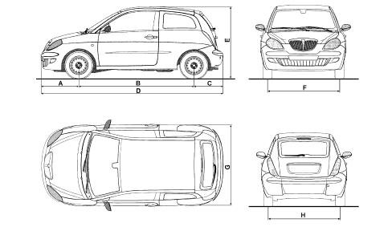

VEHICLE DIMENSIONS
- Path
- Technical Data > Project description and specifications > VEHICLE DIMENSIONS
- Kind
- technical data / specifications
- Applies to
- all engines; all production periods
- Interactive page
- https://sloeber94.github.io/elrnDB-lYpsln/en/#/2427663
Applies to: all engines; all production periods
1.2 8v | 1.2 16v | 1.4 16v | 1248 JTD | |
|---|---|---|---|---|
A (mm) | 3778 | 3778 | 3778 | 3778 |
B (mm) | 787 | 787 | 787 | 787 |
C (mm) | 2388 | 2388 | 2388 | 2388 |
D (mm) | 603 | 603 | 603 | 603 |
E (mm) | 1530 | 1530 | 1530 | 1530 |
F (mm) | 1449 (*) | 1449 (*) | 1449 (*) | 1449 (*) |
G (mm) | 1704 | 1704 | 1704 | 1704 |
H (mm) | 1440 (*) | 1440 (*) | 1440 (*) | 1440 (*) |
Applies to: all engines; all production periods
